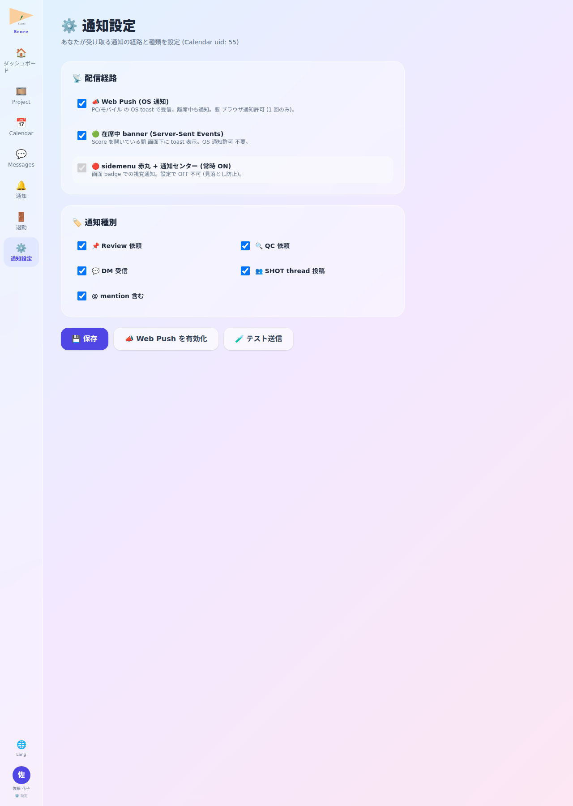

📘 この機能の目的
Push / SSE / 画面 badge の経路別 ON/OFF + category 別 (qc_request 等) ON/OFF 設定。通知過多を防止。
📸 画面

📍 画面例: PM 太郎は「桜咲く街」 関連 qc_request のみ Push ON、 他 SHOT thread 投稿は SSE のみ にして通知過多を回避。
✨ 主な機能
- Push 有効化 button — VAPID + Service Worker root scope で subscribe
- category 別 ON/OFF — qc_request / review_request / retake / approve / mention 個別設定
- 経路別設定 — Push / SSE / badge を independently ON/OFF
- HTTPS or localhost 必須 — Web Push の制約 (LAN HTTP では非対応)
- 3 秒 keepalive — SSE 接続維持間隔
🌸 使用例 — 架空 project「桜咲く街」
PM 太郎は「桜咲く街」 関連 qc_request のみ Push ON、 他 SHOT thread 投稿は SSE のみ にして通知過多を回避。
🛠 操作方法
- サイドメニュー⚙️ → 通知設定
- Push 有効化 button → ブラウザ permission 許可
- category 別 toggle で個別設定
- 経路別 (Push/SSE/badge) ON/OFF 切替